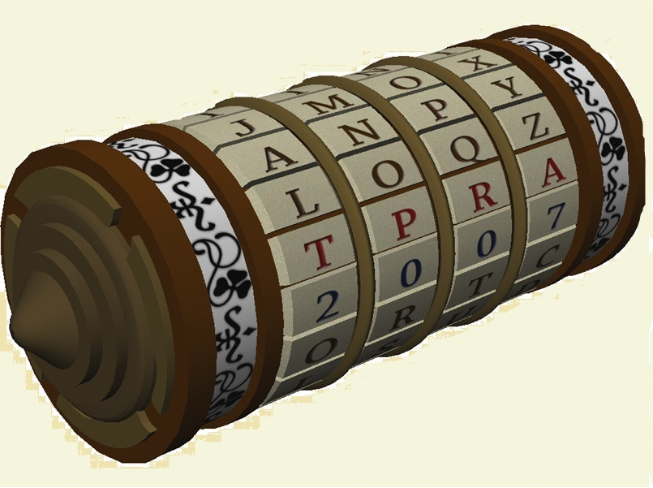

The Atbash Cipher
Atbash is a cipher originally used to encode the Hebrew alphabet,
The Atbash cipher is a type of monoalphabetic substitution cipher
that is deciphered by taking the alphabet and mapping it to its reverse.
Press to encipher/decipher a message
☜ Return to ciphers
